Piezas de carrocería para Hyundai Tucson
62 piezas disponibles hoy para Hyundai Tucson, cada una con su foto y su código: parrillas (10), cubrepolvos (7), guardafangos (6), estribos y rolling boards (5). Dinos el año de tu carro y te confirmamos si le sirve.
- Garantía de 3 días
- Foto real de cada pieza
- Efectivo, Yappy o ACH
- Lunes a sábado, 8:00 a. m. a 5:00 p. m.
Parrillas para Hyundai Tucson 10
 451Tucson2016-18 · original nuevo
451Tucson2016-18 · original nuevo 469Tucson2016-18 · original
469Tucson2016-18 · original 470Tucson2016-18 · original
470Tucson2016-18 · original 471Tucson2019-21 · original
471Tucson2019-21 · original 473Tucson2022-24 · original
473Tucson2022-24 · original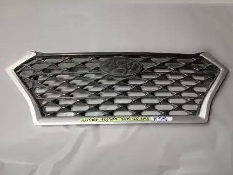
476Tucson2019-21 · original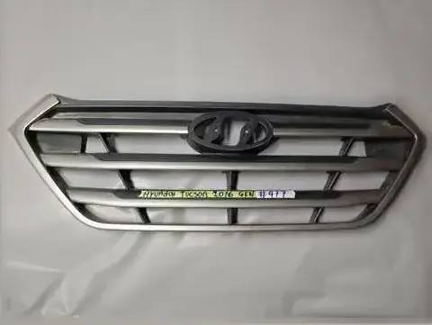
477Tucson2016-18 · genérico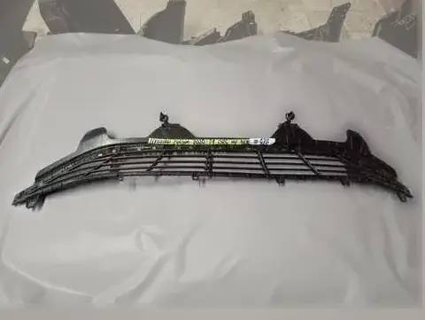
478Tucson2020-24 · original nuevo 483Tucson2016-18 · genérico nuevo
483Tucson2016-18 · genérico nuevo P041Tucson2010-14
P041Tucson2010-14Cubrepolvos para Hyundai Tucson 7
 CP005Tucson2016-21 · lado izquierdo · genérico
CP005Tucson2016-21 · lado izquierdo · genérico CP017Tucson2015-20 · lado izquierdo · original
CP017Tucson2015-20 · lado izquierdo · original CP033Tucson2016-21 · lado derecho · genérico
CP033Tucson2016-21 · lado derecho · genérico CP039Tucson2016-21 · lado izquierdo · genérico
CP039Tucson2016-21 · lado izquierdo · genérico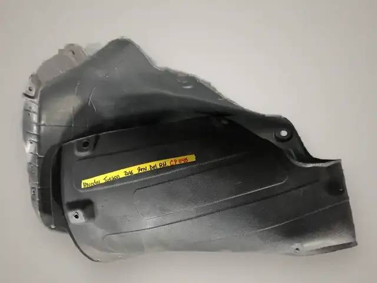
CP046Tucson2016-21 · lado derecho · genérico CP069Tucson2015-18 · lado izquierdo · original
CP069Tucson2015-18 · lado izquierdo · original CP081Tucson2013-2016 · lado izquierdo · original
CP081Tucson2013-2016 · lado izquierdo · originalGuardafangos para Hyundai Tucson 6
 GF004Tucson2016-18 · lado derecho · genérico
GF004Tucson2016-18 · lado derecho · genérico GF008Tucson2015-2021 · lado izquierdo · original nuevo
GF008Tucson2015-2021 · lado izquierdo · original nuevo GF011Tucson2016-2020 · lado derecho · original
GF011Tucson2016-2020 · lado derecho · original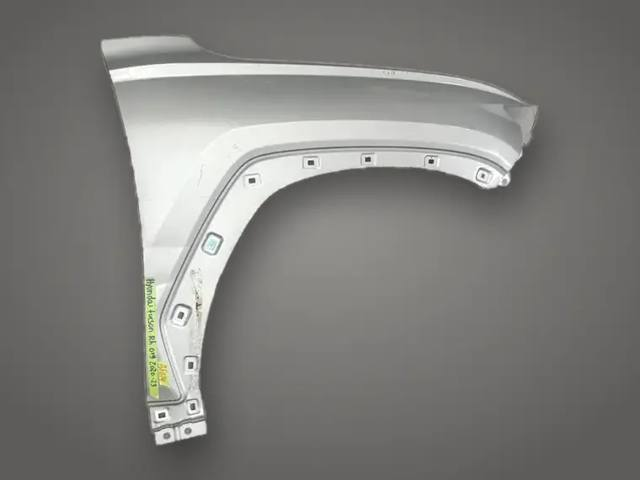
GF014Tucson2020-2023 · lado derecho · original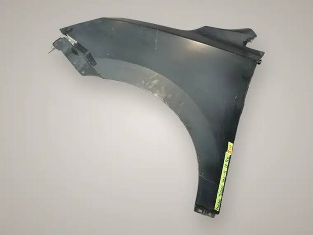
GF017Tucson2010-15 · lado izquierdo · genérico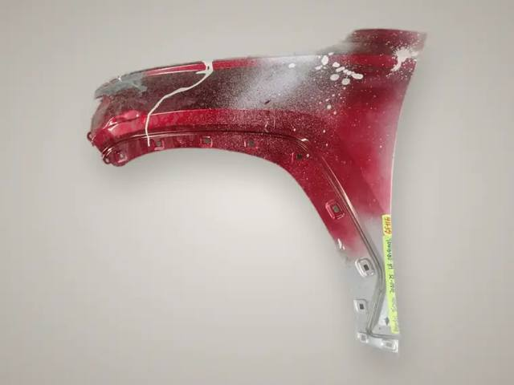
GF116Tucson2020-2025 · lado izquierdo · originalEstribos y rolling boards para Hyundai Tucson 5
 RB001Tucson2016-2021 · lado derecho · original
RB001Tucson2016-2021 · lado derecho · original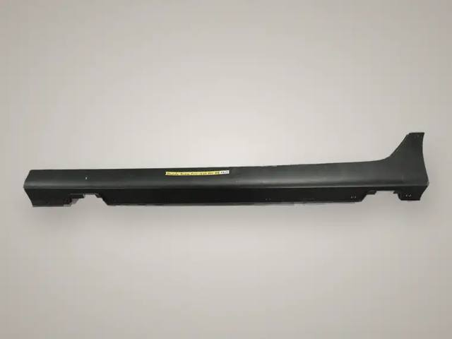
RB013Tucson2010-2017 · lado izquierdo · original nuevo RB037Tucson2015-2021 · lado derecho · original
RB037Tucson2015-2021 · lado derecho · original RB038Tucson2015-2021 · lado derecho · original
RB038Tucson2015-2021 · lado derecho · original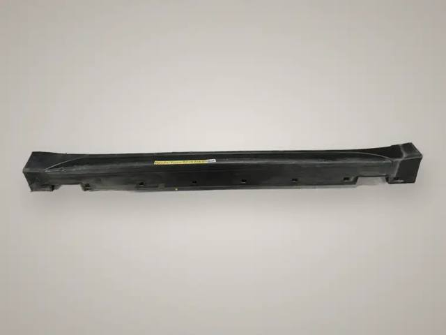
RB039Tucson2015-2021 · lado derecho · originalFaros y lámparas delanteras para Hyundai Tucson 4
 021Tucson2019-21 · lado derecho · genérico
021Tucson2019-21 · lado derecho · genérico 023Tucson2019-21 · lado izquierdo · genérico
023Tucson2019-21 · lado izquierdo · genérico 024Tucson ix352010-15 · lado izquierdo · original
024Tucson ix352010-15 · lado izquierdo · original LD011Tucson2022-24 · lado derecho · original
LD011Tucson2022-24 · lado derecho · originalCovers de halógena para Hyundai Tucson 4
 CH097Tucson2015-17 · lado derecho · original
CH097Tucson2015-17 · lado derecho · original CH117Tucson2016-20 · lado derecho · original
CH117Tucson2016-20 · lado derecho · original CH118Tucson2015-17 · lado izquierdo · original
CH118Tucson2015-17 · lado izquierdo · original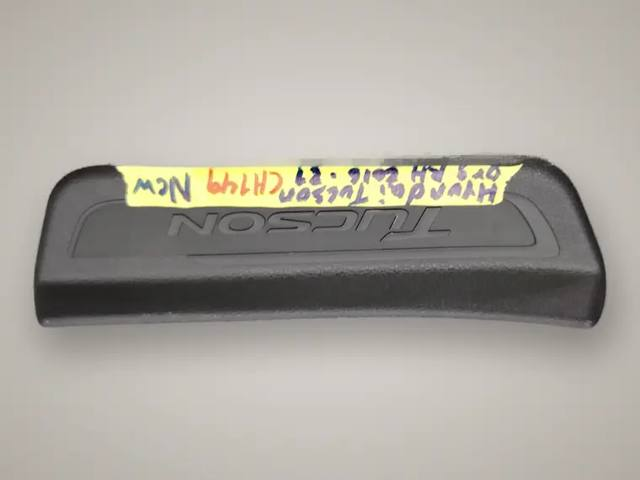
CH149Tucson2016-21 · lado derecho · original nuevoDefensas delanteras inferiores para Hyundai Tucson 4
 DDI028Tucson2018-22
DDI028Tucson2018-22 DDI033Tucson ix352010-15
DDI033Tucson ix352010-15 DDI002Tucson2010-15 · original
DDI002Tucson2010-15 · original DDI049Tucson2022-24 · original
DDI049Tucson2022-24 · originalFlares para Hyundai Tucson 3
 FL040Tucson2016-20 · lado derecho · original
FL040Tucson2016-20 · lado derecho · original FL053Tucson2021-25 · lado izquierdo · original
FL053Tucson2021-25 · lado izquierdo · original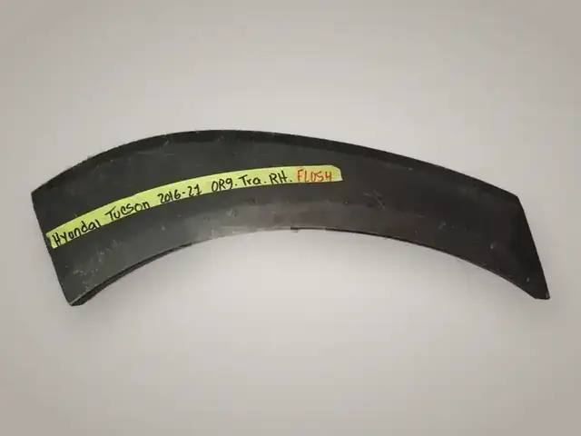
FL054Tucson2016-21 · lado derecho · originalHalógenas y faros antiniebla para Hyundai Tucson 3
 HA042Tucson2015-17 · lado izquierdo · original
HA042Tucson2015-17 · lado izquierdo · original HA004Tucson2015-17 · lado derecho · original
HA004Tucson2015-17 · lado derecho · original HA061Tucson2016-18 · lado izquierdo · original
HA061Tucson2016-18 · lado izquierdo · original DT055Tucson ix35
DT055Tucson ix35 DT056Tucson
DT056Tucson RV017Tucson
RV017Tucson PT027Tucson
PT027Tucson PT023Tucson
PT023Tucson MR013Tucson
MR013Tucson MR014Tucson
MR014Tucson DTI002Tucson
DTI002Tucson DTI023Tucson
DTI023Tucson TA001Tucson
TA001Tucson TA045Tucson
TA045Tucson 734Tucson
734Tucson 809Tucson
809Tucson TB049Tucson
TB049Tucson R065Tucson
R065Tucson